Scientific illustrations
Accurate, expressive visuals for species, structures, processes, and publications.
Science, art, and natural history
Scientific illustration & nature-inspired design
Created by an evolutionary biologist and hobby scientific illustrator, Nature.Illustrated brings together scientific accuracy, natural history, and elegant visual storytelling.
Selected work
A carefully edited cross-section of scientific illustration, editorial work, and visual identity.
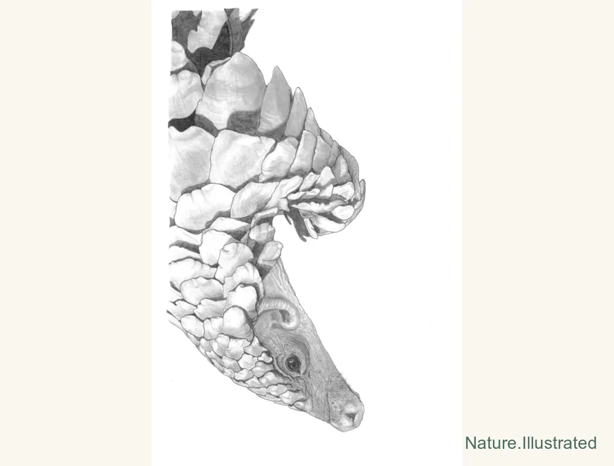
Detailed anatomy and textured linework.
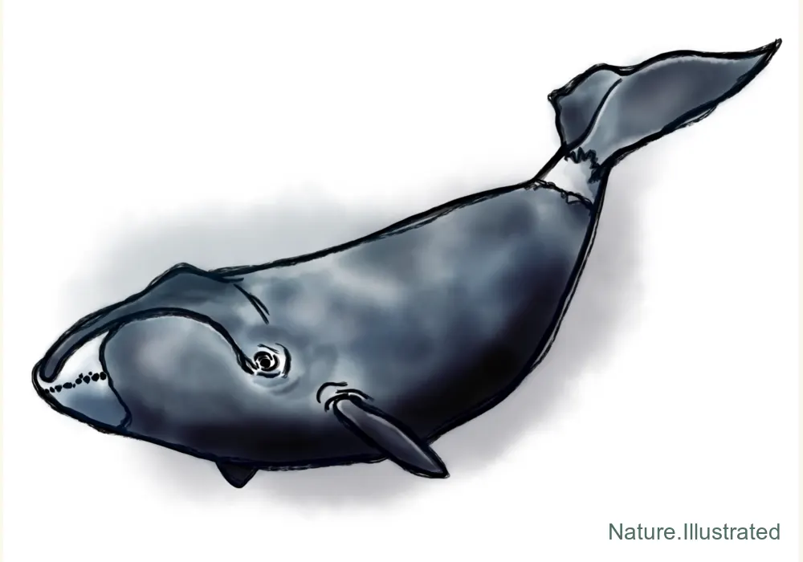
Calm, precise, and editorially clean.
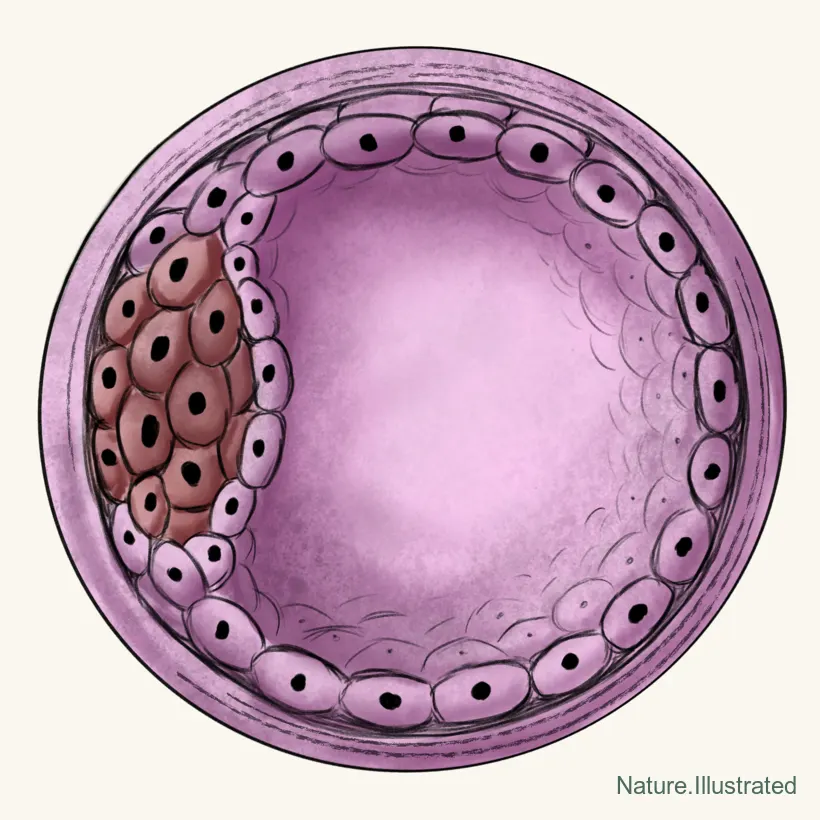
Cellular scale and circular form.
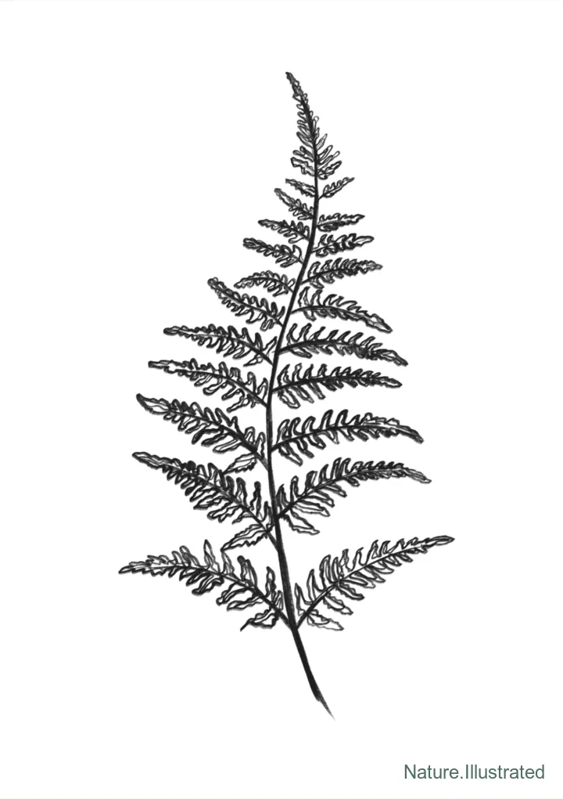
Quiet, minimal, and elegant.
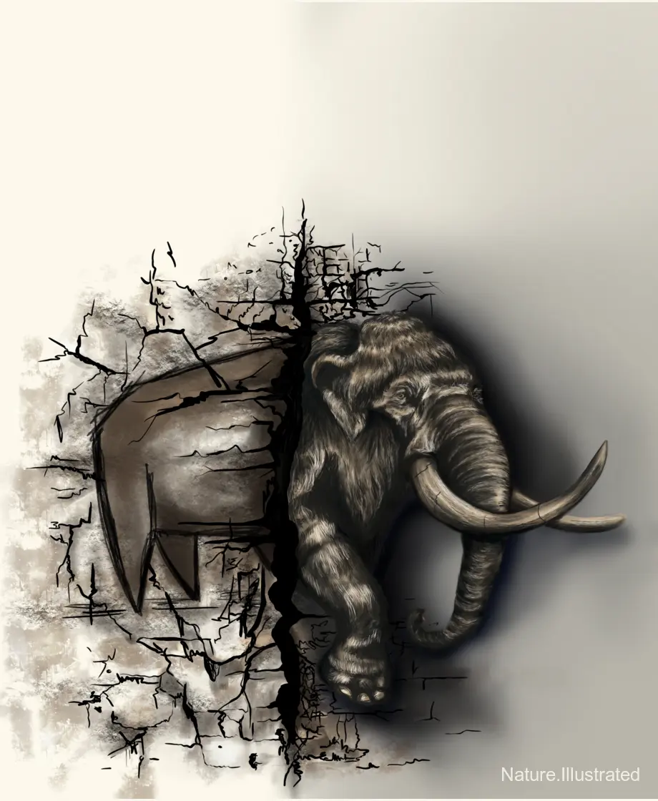
Concept-driven cover art with depth and texture.
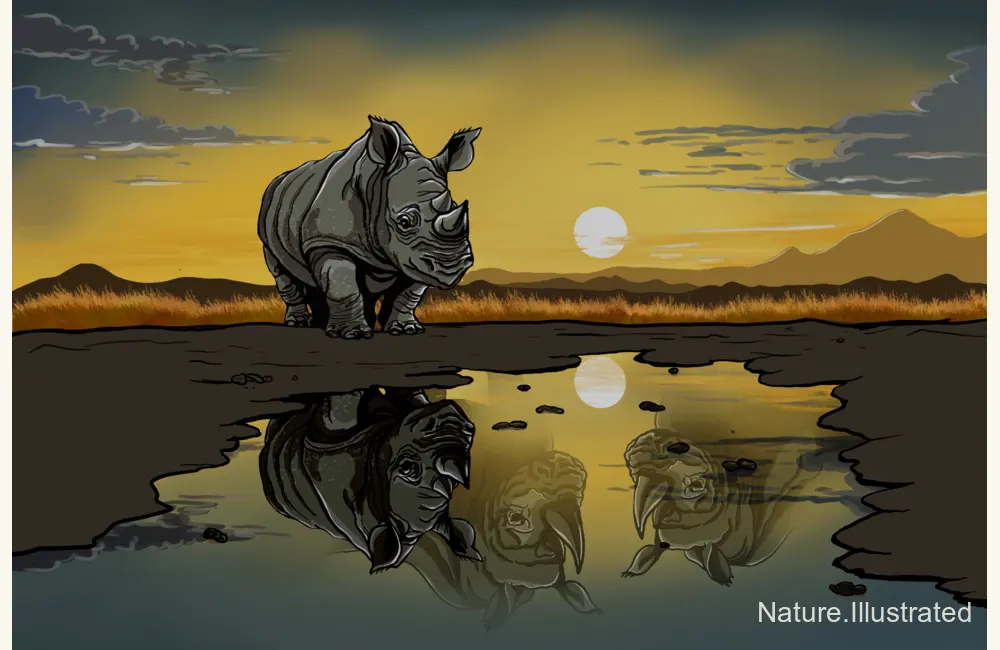
Dramatic landscape and publication polish.
About
Hi, I’m Binia De Cahsan — an evolutionary biologist at the University of Copenhagen and a hobby scientific illustrator. I create visuals that bridge scientific accuracy and artistic storytelling.
From graphical abstracts and journal covers to nature-inspired designs for everyday life, each piece begins with curiosity and careful observation.
Ways to work together
Visual support for scientific communication, publications, outreach, branding, and nature-inspired products.
Accurate, expressive visuals for species, structures, processes, and publications.
Clear visual narratives that make complex research easier to understand and share.
Distinctive editorial artwork grounded in the central finding of your research.
Publication-ready figures and conference posters with thoughtful visual hierarchy.
Identity systems inspired by the organisms, questions, and character of your lab.
Original artwork for biologists, fieldworkers, students, and nature enthusiasts.
Selected work
Selected work across scientific illustration, research visuals, branding, and nature-inspired design.
Detailed visual work inspired by animals, plants, fossils, and natural history collections.
View more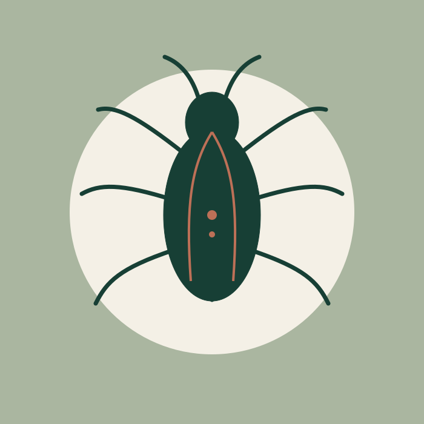
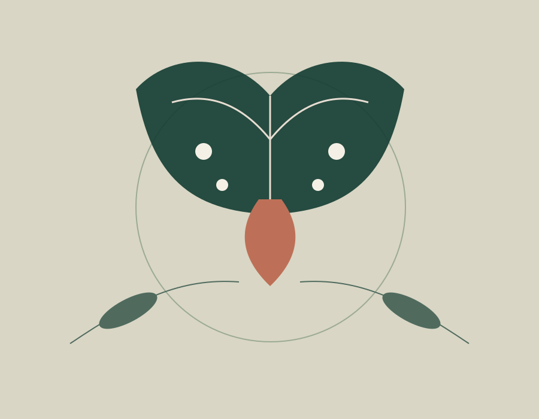
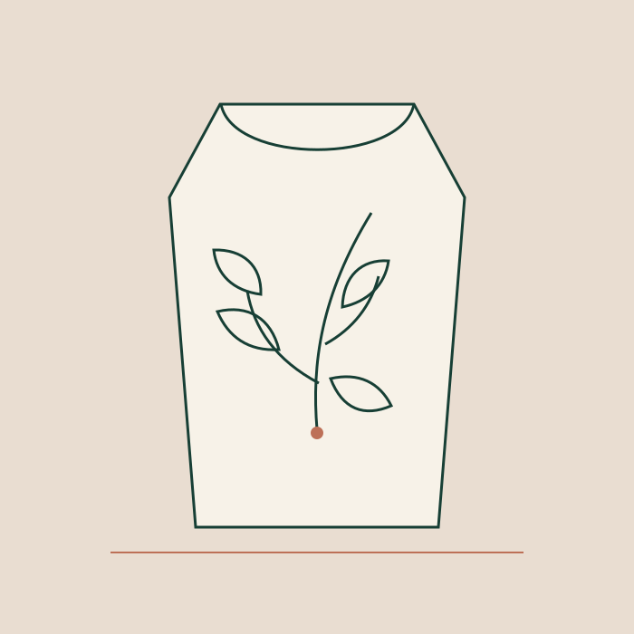
Clear, attractive visuals that communicate research questions, methods, and key findings.
View more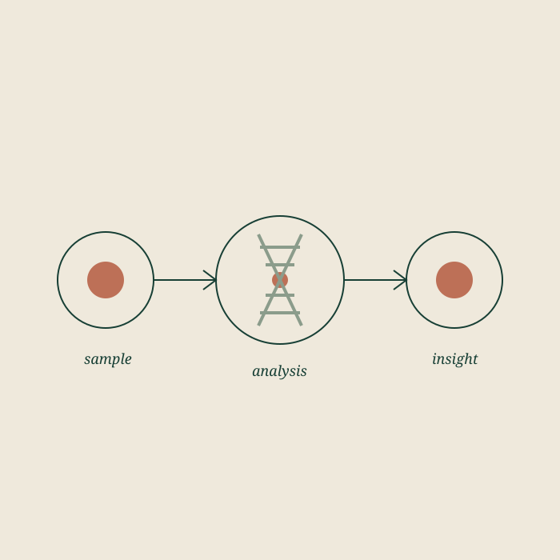
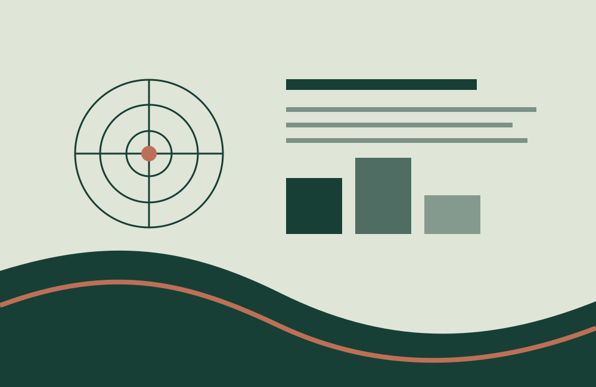
Editorial-style artwork for scientific publications and special issues.
View moreVisual identities for labs, research groups, conferences, and outreach projects.
View moreNature-inspired designs adapted for prints, clothing, stickers, and other products.
View moreWear, use, and share
Nature-inspired designs for biologists, fieldworkers, students, and anyone who loves the natural world.
Visit ShopConference collection
Conference designs created for the Society for Molecular Biology and Evolution annual meeting.
View SMBE CollectionA simple collaboration
A straightforward process with scientific accuracy and clear communication built into every stage.
Share the science, audience, format, timeline, and references behind your project.
I develop the visual direction and refine it with your scientific feedback.
Artwork arrives ready for print, web, journals, presentations, or products.